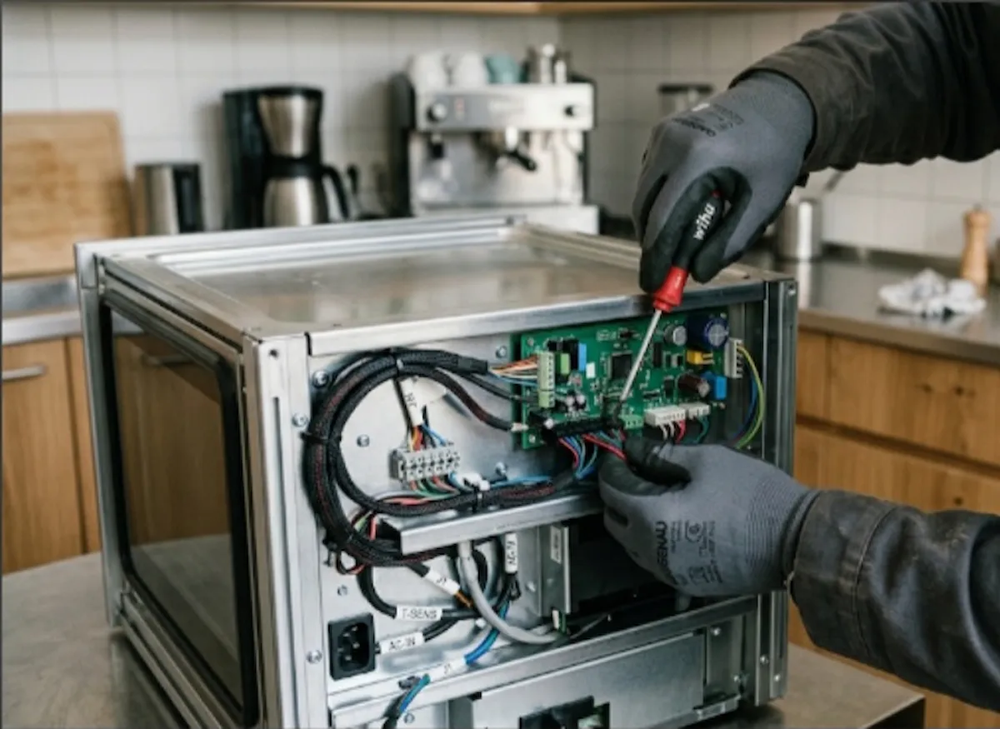

Réfrigérateurs américains & side-by-side
Panne de froid, distributeur d'eau/glaçons, carte électronique, joint de porte : diagnostic et réparation de réfrigérateurs haut de gamme.
Standard & Haut de gamme — Abidjan
Frigo américain, four encastrable, machine à laver ou cuisinière en panne ? Nos techniciens réparent tous types d'électroménager, du haut de gamme à l'équipement standard, à domicile ou en atelier selon la panne, à Cocody, Yopougon, Abobo, Koumassi et partout à Abidjan.

Nos interventions
Un diagnostic sur place, un devis clair, et une réparation réalisée par des techniciens expérimentés — quelle que soit la gamme de votre appareil.
Haut de gamme & équipements premium
Panne de froid, distributeur d'eau/glaçons, carte électronique, joint de porte : diagnostic et réparation de réfrigérateurs haut de gamme.
Résistance, thermostat, bandeau électronique, zone de cuisson défectueuse : réparation de fours et tables de cuisson encastrables haut de gamme.
Programmes électroniques, capteurs, carte de commande, pompe de vidange : dépannage de machines hublot et sèche-linge haut de gamme.
Cafetières automatiques, robots multifonctions, bouilloires design : diagnostic et réparation de petit électroménager haut de gamme.
Standard & grand public
Réparation frigo et congélateur classiques : problème de froid, moteur/compresseur, thermostat, joint de porte, gaz réfrigérant.
Dépannage machine à laver à domicile : panne de vidange, essorage, chauffe, fuite d'eau ou bruit anormal.
Dépannage cuisinière gaz, four électrique et plaques de cuisson : allumage, brûleur, résistance, sécurité gaz.
Diagnostic et réparation de micro-ondes, lave-vaisselle et sèche-linge standard, selon le type de panne.
Pourquoi IGNITECH
01
Vous nous écrivez sur WhatsApp ou nous appelez : nous répondons à toutes vos préoccupations et organisons une intervention.
02
Un diagnostic est réalisé avant toute réparation pour identifier précisément la panne.
03
Un devis clair vous est communiqué avant intervention : vous décidez en connaissance de cause.
04
Des réparateurs expérimentés en électroménager standard et haut de gamme, sur de nombreuses marques.
Questions fréquentes
Oui. Nos techniciens interviennent aussi bien sur l'électroménager standard que sur les équipements haut de gamme et de comptoir : frigos américains, fours et tables encastrables, gros électroménager premium, sur de nombreuses marques.
Le prix dépend du modèle du réfrigérateur (compact, double porte, frigo américain) et de la référence du moteur (compresseur) à remplacer. Nous établissons un diagnostic sur place avant de vous communiquer un devis clair, sans surprise.
Oui, nos techniciens interviennent chez vous pour diagnostiquer votre machine à laver, puis la réparent sur place ou en atelier selon la panne : problème de vidange, essorage, chauffe ou fuite d'eau.
Cela peut venir d'un manque de gaz réfrigérant, d'un thermostat défectueux, d'un ventilateur bloqué ou d'un joint de porte usé. Un diagnostic sur place permet d'identifier la cause exacte et de proposer la réparation adaptée.
Contactez-nous
Contactez-nous dès maintenant sur WhatsApp ou par téléphone.